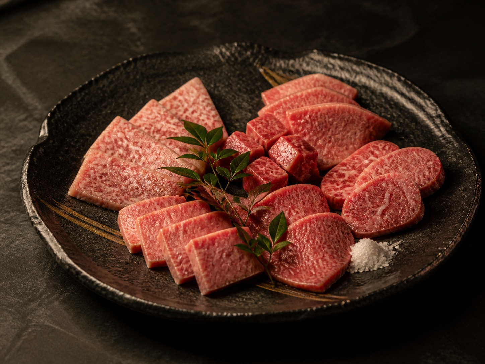
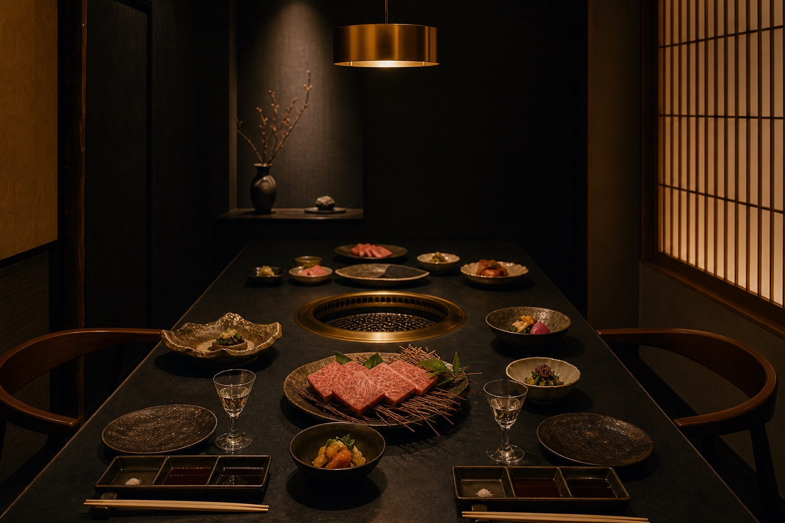
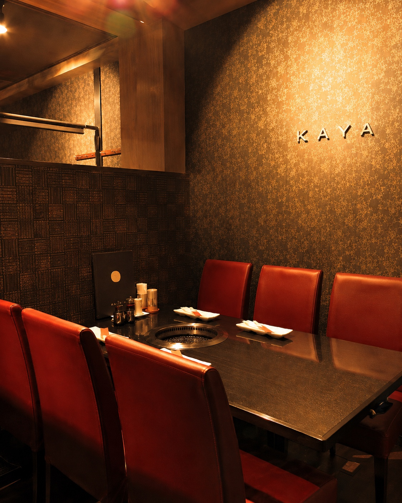

01 ANNIVERSARY
桜 SAKURA
特選和牛の人気部位を贅沢に。誕生日や記念日など、特別な夜に。
お一人様 ¥9,000このコースを予約 →KUROGE WAGYU · KICHIJOJI
選び抜いた黒毛和牛を、
吉祥寺の静かな隠れ家で。
美味しい夜には、理由がある。
01 PHILOSOPHY
銘柄や産地だけでは、肉のすべては語れない。長年培った目利きで、その日、本当に状態の良い黒毛和牛だけを選ぶ。KAYAが大切にしてきた、変わらない仕事です。
細やかなサシ、赤身の濃さ、脂の香り。部位ごとの個性を見極め、いちばん美味しい厚みでお出しします。

02 SIGNATURE
風味、肉汁、食感。そのすべてが揃う厚切りハラミをはじめ、カルビ、ロース、希少部位まで。余計な飾りを加えず、和牛そのものの力を一皿に。
WAGYU
03 COURSE
記念日、会食、気心の知れた方との夕食。
三つのコースに、それぞれの時間を仕立てました。

特選和牛の人気部位を贅沢に。誕生日や記念日など、特別な夜に。
お一人様 ¥9,000このコースを予約 →上カルビやハラミを含む全13品。上質な肉をゆっくり堪能したい夜に。
お一人様 ¥7,500このコースを予約 →KAYAおすすめの黒毛和牛を含む全11品。初めての方にも。
お一人様 ¥5,000このコースを予約 →
04 SPACE
柔らかな灯りと、落ち着いたアースカラーの店内。周囲を気にせず会話を愉しめる半個室を備えた、全32席の小さな店です。記念日にも、気負わない会食にも。
05 ACCESS
JR中央線・京王井の頭線
吉祥寺駅 公園口より徒歩6分
火〜金 17:00–23:00
土日祝 17:00–22:30
月曜日
祝日の場合は営業、翌日休み